Our phone will be a very simple design, with a rectangular frame, a screen, and two identical cameras:

During the tutorial, we will create the following files:
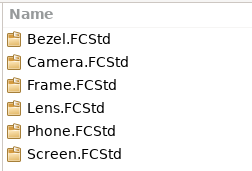
Two of these are assembly files, as the camera will be included as a sub-assembly in the phone in two different places, front and rear. Assemblies, sub-assemblies and parts are handled in exactly the same way.
Saving the components in separate files allows them to be worked on by different engineers. Each will have a clearly defined interface to the other documents, allowing easy interchange of different or upgraded designs for modular components.
We need a recent version of FreeCAD (at least 0.19). Under Tools -> Addon manager, install the Assembly4 Workbench:

From the start page of FreeCAD, select “Create new…”

Save the file in your selected directory as “Frame”
Choose the Assembly 4 workbench  and create a new Body:
and create a new Body:  Leave the default name “Body”.
Leave the default name “Body”.
Now we are ready to model the frame. In this case, it will be a simple rectangular pad with pockets for the screen and two cameras.
Right-click on the Body in the tree and select “Toggle active Body”.
This will open the Part Design workbench. 
Create a new sketch:
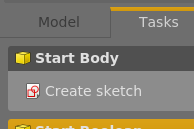
Select the XY Plane:
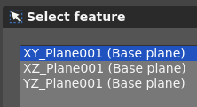
and click OK.
Create a rectangle 145x70mm:

Press Escape, or the close button on the Tasks tab to close the sketch.
Pad the sketch to create the frame of the phone:
 Leave the default 10mm and click OK.
Leave the default 10mm and click OK.
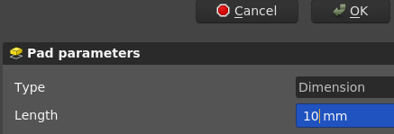
Click the top face of the phone frame, then the “Create a new sketch” button. 
Set the dimensions of the screen as follows:

Note: Good engineering practice would reference these dimensions from a spreadsheet to enable rapid design upgrades or different phone sizes from the same design.
Press Escape or Close to exit the sketch, and then create a pocket
Make the pocket 2mm deep.

Open a new sketch on the top of the phone for the front camera cutout, and create a circle with the following dimensions:

As before, create a pocket, this time 4mm deep:

Flip the phone frame over, and repeat for the rear-facing camera, creating another 4mm deep pocket:

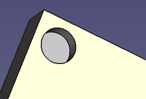
The Tree for the Frame should now look like this:
The frame design is now complete, but we need some local co-ordinate systems to allow assembly of the components to the frame in the correct places.
Switch back to Assembly 4 workbench.
This is the heart of Assembly 4. We will add the Local Co-ordinate Systems to the frame in the positions and orientations for the sub-assembly parts to attach correctly to the frame.
First, we will create an LCS to attach the screen in the corner of the frame. Select the Body in the tree and then click “Create a new co-ordinate system in part”

Call it LCSScreen:

Right-click on the new LCS in the tree
and select “Edit datum”.
Highlight “XY tangent to surface”
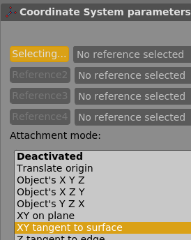
Zoom in on the bottom left corner of the frame, and select the base plane of the pocket created earlier.
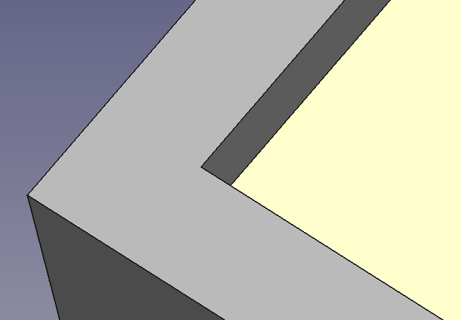
Next, click exactly in the corner of the pocket to select the vertex that will lock in the X and Y for this datum:
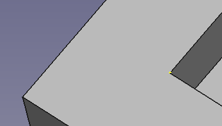
Note the small yellow dot in the image above.
We now have an LCS positioned correctly, but it is facing out from the corner, so we need to rotate it.
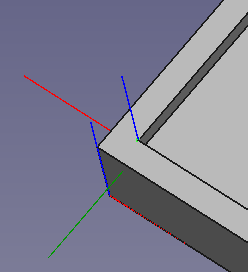
In the bottom of the dialogue, change “Around z-axis” to 180°:

The LCS is now correctly oriented for the screen to attach.

Click OK at the top of the dialogue and move to the front camera position.
Again, select the Body in the tree and click “Create a new co-ordinate system in part”
Name it LCSFrontCamera.
Right-click on the new LCS in the tree and select “Edit datum”.
Select the bottom circumference of the front camera pocket (yellow line in this picture):

Click OK.
That's it. We don't need to consider rotation in this case, and the module has automatically selected “concentric” as the constraint type.

Repeat the exercise above for the rear camera:

Save the Frame file.
Open a new file and save it as Screen
Choose the Assembly 4 workbench and create a new Body: Leave the default name “Body”.
Right-click on the Body in the model tree and select “Toggle active body” to open the Part Design workbench.
Create a new sketch on the XY plane with a simple rectangle:
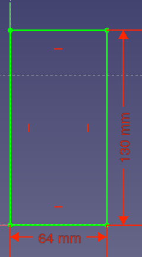
Note that the corner of the sketch is co-incident with the origin. This will align later with the LCS that we created above.
Exit the sketch, then create a pad 1mm vertically.
Right-click on the Body in the model tree, then change the appearance to 70% transparency, and a blue-ish colour.
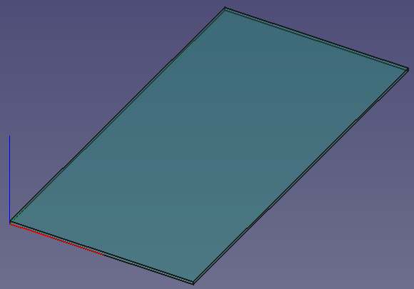
Save the Screen file.
Open a new file and save it as Bezel.
Create a new body  under the Assembly 4 workbench.
under the Assembly 4 workbench.
Right-click on the Body in the model tree and select “Toggle active body” to open the Part Design workbench.
Create a new sketch on the XY plane with two concentric circles 8mm and 6mm diameter:

Exit the sketch, then pad 5mm vertically.
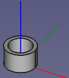
We now need to insert a Local Co-ordinate System to attach the lens when we create the Camera sub-assembly. The lens will be positioned near the top of the bezel.
Select the Body in the model tree and click “Create a new co-ordinate system in part”
under the Assembly 4 workbench.
Name it LCS_LensAttachment:
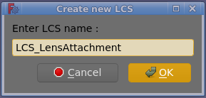
Right-click on the new LCS in the tree
and select “Edit datum”. Select the top circumference to place the datum at the top of the bezel.
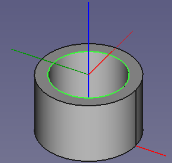
To protect the lens, we need to recess it 1mm below the top of the bezel. Change “In z-direction” to -1 mm:

This drops the LCS as shown:

Save the Bezel file.
Open a new file, and save as Lens. Create a body as before, then make a spherical lens starting with the following sketch on the XZ Plane, not the XY plane as for the previous parts:

Note that the center of the radius must be constrained vertically to the origin for a tangential top surface. The exact dimensions are not important for this exercise.
Revolve  the sketch 360°, then mirror
the sketch 360°, then mirror  the Revolution feature
the Revolution feature
to create a double-sided lens something like this:

You can adjust colours and transparency if you like.
For this component, we have modelled with the origin at the centre of mass, so we don't need to add an extra Local Co-ordinate System.
Our lens model tree should now look like this:
Save the Lens file.
Create a new file, and save it as Camera.
Create a new Assembly 4 Model. In this case, we don't need a Body, as we will link the bodies from the parts already created.
Prior to linking bodies from other parts, we need to close and re-open all files so that part names are shown correctly.
Insert a link to the Bezel body  , keeping the default name Bezel_Body, since there will be only one instance of it in this sub-assembly.
, keeping the default name Bezel_Body, since there will be only one instance of it in this sub-assembly.
Select Bezel_Body in the model tree and click “Move/Attach a part in the assembly” under the Assembly 4 workbench.
For “Attach to:”, select “Parent Assembly”. Select “LCS_Origin” on both sides of the dialogue:
This will place the bezel at the origin of the sub-assembly.
Now insert the Lens#Body into the Bezel in the same way, except in this case, we will attach it to the LCS created earlier.
Select “Bezel” on the right-hand side of the dialogue this time, and “LCS_LensAttachment” in the parent:
The lens is now positioned with it's origin 1mm below the top of the bezel:
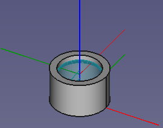
Save the Camera sub-assembly file.
Create a new file, and save it as Phone.
Create a new Assembly 4 model.
Insert a link to the Frame part , keeping the default name Frame_Body, since there will be only one instance of it in this assembly.
The frame will be inserted at the origin, so there is no need to place it.
Insert a link to the Screen body , keeping the default name Screen_Body, since there will be only one instance of it in this assembly.
Place the Screen#Body by selecting “LCS_0” for the Screen, and “LCS_Screen” for the co-ordinate system in the frame.
Because we aligned the LCS in the Frame file, it positions correctly without any rotation:
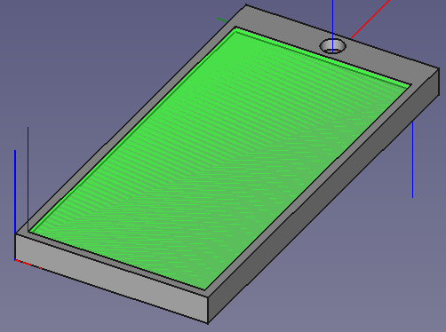
Now we can insert two instances of the Camera sub-assembly.
As above, insert a link to the Camera part , but this time, Change the name to CameraFront, since there will be two instances of it in the phone assembly.
Place the part, choosing “LCS_Origin” for the camera linked part, which is located at the base of the sub-assembly, and “LCS_FrontCamera” for the parent part.

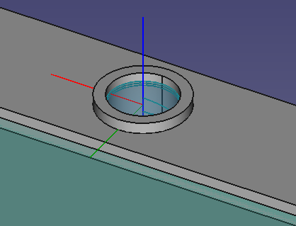
Repeat for the rear camera, selecting the same model, but this time naming it to “CameraRear” and selecting “LCS_RearCamera” as the attachment point on the frame.

Our model tree now looks like this, showing Bodies attached from the simple parts, and Models from the sub-assemblies.
Save the Phone assembly file.
We now have a very stylish smartphone, ready for the day when the “square” look comes back into fashion.
This model attaches subassemblyies at their origin. For a quick tutorial on subassemblies with their own Local Co-ordinate Systems, refer to https://github.com/thermalling/FreeCADAsm4_TutorialSubassemblyTable.
Thanks to Zolko for Assembly 4, and the FreeCAD developers for making this possible for us.
All feedback and corrections most welcome.